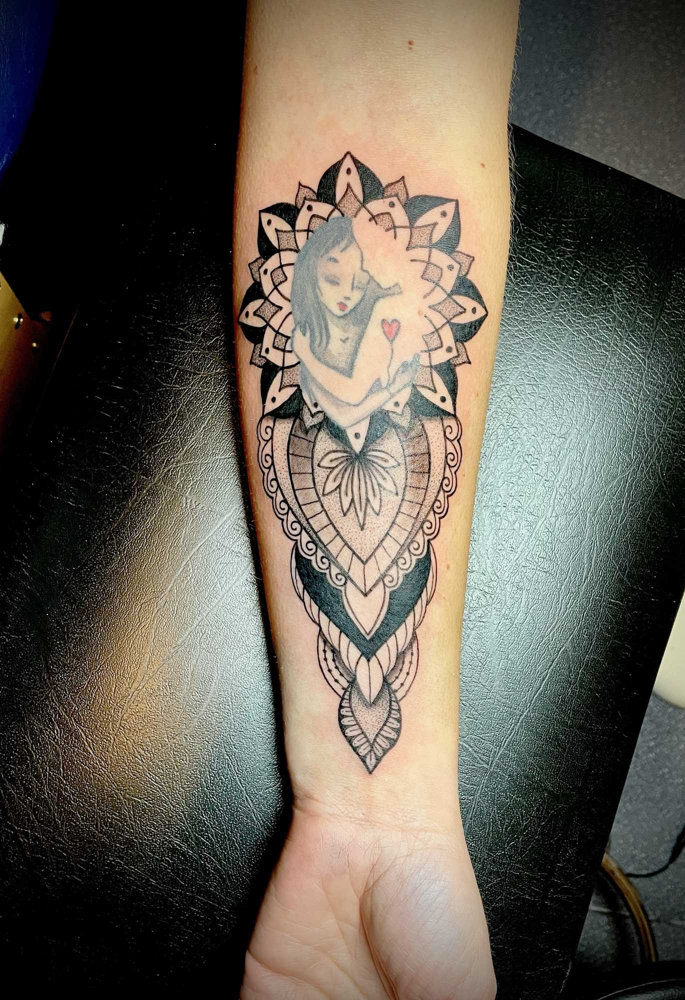
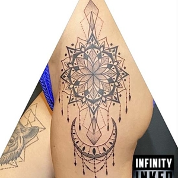
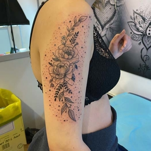

Ornemental
Symétrie, motifs répétitifs, architecture décorative. Un style qui sublime le corps comme un bijou permanent.
Studio de tatouage — Soyaux, 16800 — près d'Angoulême
Ornemental — Géométrie — Florale — Dotwork
Tatouage à Soyaux, près d'Angoulême




Note Google — 70+ avis
Clients satisfaits & recommandés
Styles signature — Ornemental · Géométrie · Florale · Dotwork
Bienvenue chez Infinity Inked Tattoo, studio installé à Soyaux (16800), à quelques minutes d'Angoulême. Ici, chaque tatouage est une conversation entre votre projet et le savoir-faire de Sandra.
Sandra travaille en petite série, sur rendez-vous, dans un espace calme et soigné. Elle ne fait pas de tatouages à la chaîne. Elle fait votre tatouage — celui qui tient dans le temps, qui vous ressemble, et qui est exécuté avec l'hygiène et l'attention que votre peau mérite.
Styles de prédilection : ornemental, géométrie sacrée, floral et dotwork. Des lignes qui se rejoignent. Des géométries organiques. Un équilibre entre rigueur et poésie.

Symétrie, motifs répétitifs, architecture décorative. Un style qui sublime le corps comme un bijou permanent.

Formes précises, lignes nettes, compositions mathématiques. La rigueur au service de l'esthétique.

Botanique, délicate, organique. Fleurs, tiges et feuillages tracés avec soin, du réaliste au stylisé.

Points, dégradés, textures. Une technique exigeante qui donne une profondeur et une douceur uniques.
"Sandra a su retranscrire exactement ce que j'avais en tête. L'accueil est chaleureux, le studio est impeccable, et le résultat est bluffant. Je recommande les yeux fermés."
"Mon premier tatouage, et c'était une excellente expérience. Sandra prend le temps d'écouter, de conseiller. Le dotwork qu'elle m'a fait est d'une précision remarquable."
"Un tatouage ornemental sur la cheville — je voulais quelque chose de fin, d'élégant. Sandra a livré exactement ça. Une vraie artiste qui respecte votre projet."